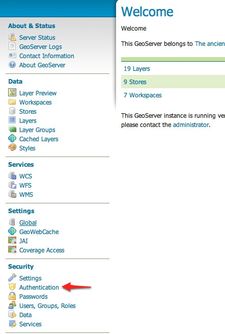
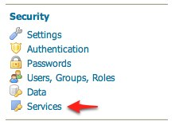

Configuring HTTP Header Proxy Authentication¶
Introduction¶
프록시 인증(proxy authentication)은 다단계(multi-tier) 시스템에서 쓰입니다. 사용자/본체(user/principal)를 프록시에서 인증하고 프록시는 다른 서비스에 인증 정보를 전달합니다.
이 예제에서 GeoServer가 HTTP 헤더 속성(들)을 통해 전달받은 인증 정보를 어떻게 받아들일지 설정하는 방법을 설명합니다. 프록시 인증 시 GeoServer가 직접 인증 작업을 하는 일은 없습니다.
Prerequisites¶
이 예제에서 인증 방법 테스트 용 HTTP 요청을 발행하는 curl 유틸리티를 사용합니다. 이 예제를 진행하기 전에 curl을 설치해주십시오.
주석
HTTP 헤더 속성을 설정할 수 있는 유틸리티라면 어떤 것이든 curl 대신 사용할 수 있습니다.
Configure the HTTP header filter¶
GeoServer를 실행하고 admin 사용자로 웹 관리자 인터페이스에 로그인합니다.
사이드 메뉴의 Security 섹션 아래 있는 Authentication 링크를 클릭하십시오.
Authentication Filters 패널로 스크롤해서 Add new 링크를 클릭하십시오.

HTTP Header 링크를 클릭하십시오.

설정 서식의 항목에 다음과 같이 입력하십시오.
- Name에 “proxy”를 입력합니다.
- Request header attribute에 “sdf09rt2s”를 입력합니다.
- Role source에 “User group service”를 입력합니다.
- 사용자 그룹 서비스 명칭을 “default”로 설정합니다.
롤 서비스에 대한 추가적인 정보를 알고 싶다면 Role source and role calculation을 참조하십시오.

경고
이 예제에서 헤더 속성명에 알아보기 힘든 “sdf09rt2s”를 쓰고 있습니다. 어째서 “user”나 “사용자명(username)”을 쓰지 않을까요? 프록시 인증 작업은 프록시와 GeoServer 사이에 믿을 수 있는 관계(relationship of trust)가 필요합니다. 공격자가 “admin” 값을 가진 “user” HTTP 헤더 속성을 갖춘 HTTP 요청을 보내 손쉽게 관리자 작업을 할 수 있기 때문입니다.
프록시 IP 주소에서 나온 요청만을 받아들이도록 네트워크 기반시설을 설정하는 것도 한 방법입니다.
이 예제에서 프록시와 GeoServer 사이에서만 공유되는 비밀이어야 하는 알아보기 힘든 헤더 속성명을 쓰는 것도 그런 이유 때문입니다. 또 SSL을 사용할 것을 권장합니다. 그렇지 않으면 이 공유된 비밀이 일반 텍스트로 전송되기 때문입니다.
저장하십시오.
다시 Authentication 페이지로 돌아와 Filter Chain 패널로 스크롤합니다.
Request type 드롭다운 메뉴에서 “Default”를 선택합니다.
basic 필터를 선택 해제한 다음 proxy 필터를 선택합니다. proxy 필터를 anonymous 필터 앞으로 옮깁니다.

저장하십시오.
Secure OGC service requests¶
앞 섹션에서 설정한 인증 작업 설정을 테스트하려면 먼저 서비스 또는 리소스에 보안을 적용해야 합니다. Default 필터 사슬이 모든 OGC 서비스 요청에 적용되는 사슬이기 때문에 서비스 보안 규칙을 설정해야 합니다.
GeoServer 홈페이지로 이동해서 사이드 메뉴의 Security 섹션 아래 있는 Services 링크를 클릭하십시오.
서비스 보안 페이지에서 Add new rule 링크를 클릭하고 ADMIN 롤이 필요한 모든 OGC 서비스 요청에 보안을 적용하는 모든 규칙을 추가합니다.

저장하십시오.
Test a proxy login¶
다음 curl 명령어를 실행하십시오.
curl -v -G "http://localhost:8080/geoserver/wfs?request=getcapabilities"
접근이 거부됐다고 알려주는 403 응답이 다음과 같이 화면에 표출되어야 합니다.
* About to connect() to localhost port 8080 (#0) * Trying ::1... connected > GET /geoserver/wfs?request=getcapabilities HTTP/1.1 > User-Agent: curl/7.22.0 (x86_64-pc-linux-gnu) libcurl/7.22.0 OpenSSL/1.0.1 zlib/1.2.3.4 libidn/1.23 librtmp/2.3 > Host: localhost:8080 > Accept: */* > < HTTP/1.1 403 Access Denied < Content-Type: text/html; charset=iso-8859-1 < Content-Length: 1407 < Server: Jetty(6.1.8) < <html> <head> <meta http-equiv="Content-Type" content="text/html; charset=ISO-8859-1"/> <title>Error 403 Access Denied</title> </head> ...
c--header 옵션을 추가하여 다음 명령어를 실행합니다.
curl -v --header "sdf09rt2s: admin" -G "http://localhost:8080/geoserver/wfs?request=getcapabilities"
인증이 성공하고, WFS 역량 요청이 일반적으로 전송될 것입니다.